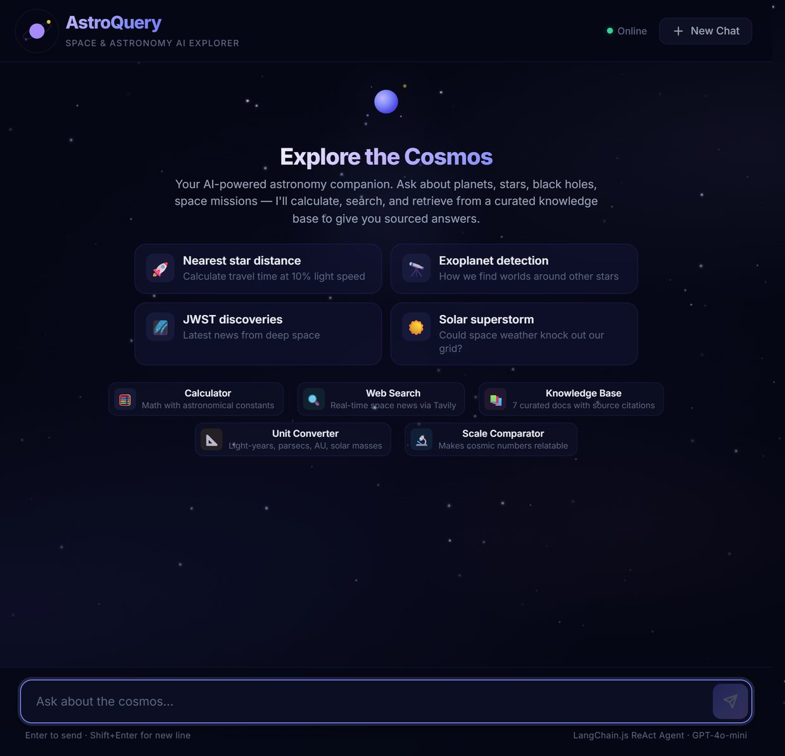
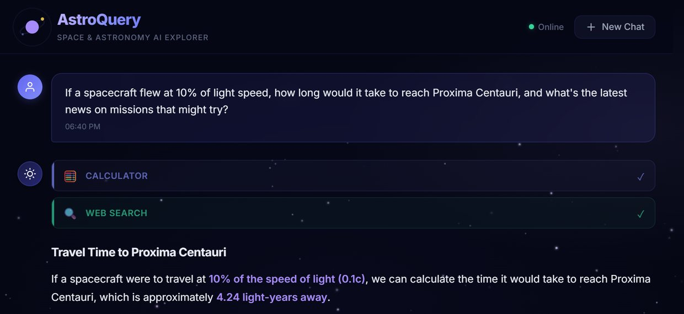
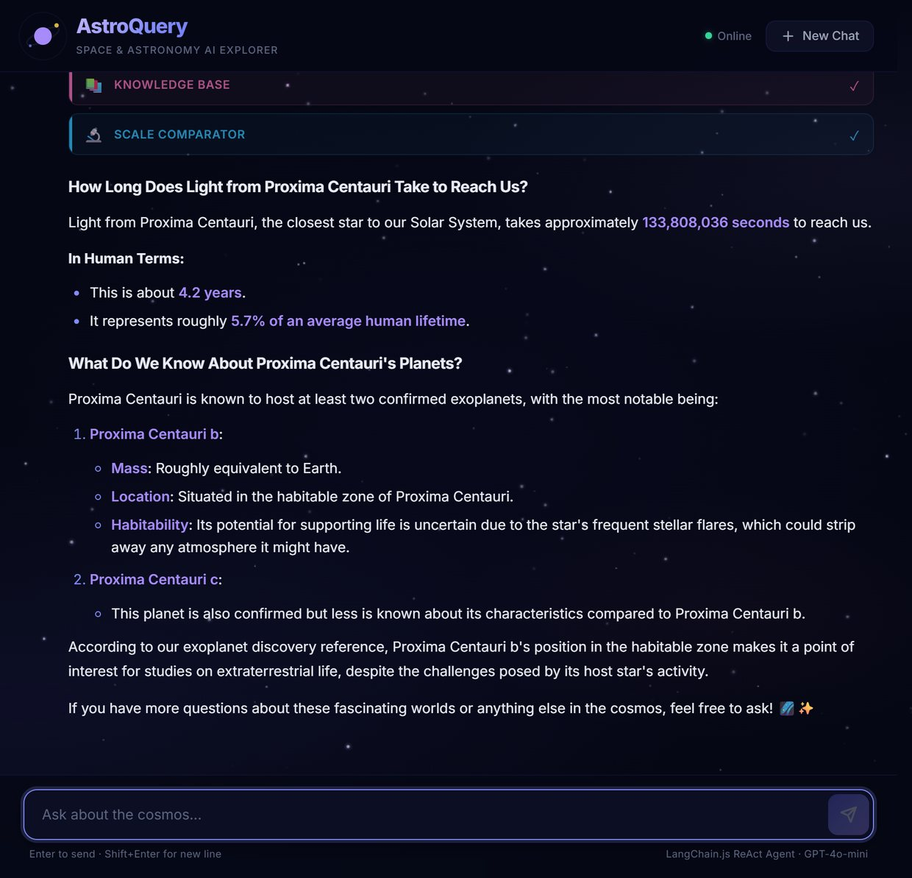

The short version
a two-minute read- The question
- A class asked for an agent that reasons about a question, picks tools, reads what they return and keeps going until it can answer. What topic would make that pattern earn its keep?
- What I built
- An astronomy chat agent with five tools: a calculator that knows astronomical constants, live web search, a searchable library of seven documents I put together, a unit converter, and a tool that turns huge numbers into human terms. It remembers the conversation and cites its sources.
- What came out of it
- A working app that chains tools without being told how. On the question above it looked up a fact, did the arithmetic and reached for a sense of scale, and all three tools had run within four seconds. I also wrote a proposal for where an agent would genuinely help students: planning a course schedule.
- My part
- All of it. A first version in March, then this one in a single day of commits in April: the tools, the retrieval, the agent and its memory, the interface and the write-up.
- 5 tools
- that the agent chooses between on its own
- 73 passages
- from seven documents, each one cited by document and section
- 3.8 s
- from the question above to its third tool call
01The idea
I wanted questions that a single tool can’t answer
I built this assignment twice. It asked for an agent built on the ReAct pattern, which simply means the model alternates between thinking and acting: it decides it needs something, calls a tool, reads the result, and decides again. The required tools were a calculator, a web search and a search over at least five documents of my own, plus memory and a web interface.
My first version in March used those three tools over a small library about AI and machine learning. For the second I wanted a topic where a good question usually needs more than one tool, so that the agent would have real choices to make. Astronomy is full of enormous numbers, unit conversions, recent news and settled background knowledge, often all in the same sentence.
An agent is only worth building when the path to the answer changes from one question to the next.

02The tools
Five tools, two of them my own idea
Three tools were required. I added a unit converter and a fifth tool I called CosmicScale, because the numbers in astronomy mean nothing to most people. Light takes 499 seconds to reach us from the Sun; the nearest star is 40 trillion kilometres away. CosmicScale takes a number and finds the everyday things it is closest to, from a football field up to the distance to Andromeda.
Calculator
AstroCalculatorEvaluates math with 13 constants built in, such as the speed of light, the astronomical unit, the parsec and the mass of the Sun.
Web search
SpaceSearchSearches the live web through Tavily for news, launches and recent discoveries, and returns titles, snippets and links.
Library
CosmicLibrarySearches the seven documents I wrote for the agent and returns the four closest passages, each labelled with its document and section.
Unit converter
UnitConverterConverts distances and masses between everyday and astronomical units, from miles to megaparsecs and from pounds to solar masses.
Sense of scale
CosmicScaleTurns a distance, mass, time or temperature into comparisons with familiar things, so an answer lands with a person.
03How it chooses
The model picks the tools, and the instructions teach it when
Nothing in the code says which tool to call for which question. The model decides, and what shapes its decisions is the description of each tool and a short set of rules I wrote into its instructions. They boil down to this:
The log of the question at the top of this page shows what that looks like in practice. In its very first step the model called two tools at once: the library, to look up how far the nearest star is, and the calculator, using the 4.24 light-years it already knew. It didn’t wait for the library to confirm the number before doing the arithmetic. Once both came back it handed the result to CosmicScale, and then wrote the answer. That is the ReAct loop doing exactly what it is for: no step of that path was written down anywhere in advance.
It also shows the pattern’s weak spot. The model trusted its own memory of the distance and only checked it in parallel, which is fine for the nearest star and riskier for a fact it might get wrong. To keep it from wandering, the agent is set to stop after ten rounds of tool calls, and it sees only the last 24 messages of a conversation, which is enough for follow-up questions to work.

04The library
A small library, cut into passages that can be cited
For the library I wrote seven short reference documents, about 7,500 words in all, covering the Solar System, stars, exoplanets, space missions, cosmology, black holes and space weather. Each one is split into passages of up to 1,000 characters that overlap by 200, so that a sentence cut in half at one boundary is whole in the next passage. Every passage remembers its document and the heading it sits under, which is what lets the agent cite “Exoplanet Discovery and Characterization › Detection Methods” instead of just “a document”.
7 documents
- The Solar System
- Stellar classification and life cycles
- Exoplanets
- Space missions
- Cosmology
- Black holes
- Space weather
split and embedded
73passages of up to 1,000 characters, each turned into a vector and saved to disk with it
a question comes in
“What methods do scientists use to detect exoplanets?”
The four closest passages come back, labelled:
One detail made a real difference to running it. Turning passages into vectors costs API calls, and at first the saved store kept only the text, so every restart paid for the vectors again. I changed it to save the vectors along with the text, and from then on the server logged “Vector store loaded from cache: 73 documents (no API calls)” and was ready in a fraction of a second.
05The bug
Two minutes of “Thinking…” while the server had already answered
The most instructive part of the project was a bug. I asked the finished app how scientists detect exoplanets, and it sat on “Thinking…” for two minutes. The server log told a different story: the agent had called its tool and had its results back within three seconds.
the server log
17:59:15.710 Chat request What methods do scientists use to detect exoplanets? 17:59:17.474 Tool call CosmicLibrary 17:59:18.068 CosmicLibrary results 4 passages, top: Exoplanet Discovery and Characterization
the browser
Thinking…
2 minutes
The answer was being sent as a live stream of events, and the version of the Express web server I was using held that stream back instead of passing it on as it arrived. The browser was waiting for an answer that was sitting in a buffer. I chose the dependable fix over the elegant one: the page now makes a plain request, gets the whole answer back, and plays it out with a typewriter effect. I also switched how the server reads the agent’s progress, so tool calls and the final answer are told apart reliably.
That fix had a cost I want to be honest about. The tool cards now appear together with the answer instead of lighting up live while the agent works. Getting true streaming back is the first thing on my list below.

06Beyond the code
Where an agent would actually help: choosing next semester’s classes
The assignment also asked where the agent pattern would fit a real system. I picked course registration, because planning a semester means juggling the course catalogue, the degree audit, rating sites and the registration portal at the same time. “What should I take next semester?” is a chain of questions, and which links the chain needs depends on the student.
- DegreeAuditWhich requirements are still open?
- PrereqCheckerWhich of those courses can this student take?
- SectionSearchWhich sections are open next semester?
- ScheduleBuilderWhich ones fit around the classes already fixed?
- RatingLookupWhat do other students say about them?
The proposal argues that simpler designs fall short in specific ways. A static recommendation page can’t handle follow-ups like “which of those are Monday-Wednesday-Friday mornings?”. A rule-based system would need every possible question written in advance. And a chatbot without tools has no way to check live seat counts or prerequisites, so it would make course offerings up. A simple question like “Am I eligible for this course?” needs one tool, and “build me a full schedule” needs all five, which is exactly the variety the pattern is good at.
07Next
What I would do with another week
- Bring back live streaming, so people can watch the agent pick its tools as it happens, which is the most interesting thing about it.
- Render math. When the agent shows a calculation it sometimes writes it in LaTeX, which the interface prints as raw code.
- Test the tool choices. Write a set of questions with the tools each one should use, and score how often the agent picks right. That would turn “it seems to choose well” into a number, and show whether a change to the instructions helps or hurts.
- Check facts before computing with them, by making the calculator wait for the library when a number could come from either.
Method notes
stack, decisions and numbers
- Context
- An individual assignment in Applied AI Projects at BYU. A first version on March 25, 2026 (calculator, web search and retrieval over six AI and machine learning documents), and this one, built on April 13 in 14 commits.
- Agent
- LangGraph’s prebuilt ReAct agent on LangChain.js, with GPT-4o-mini at temperature 0.3. At most ten rounds of tool calls per question. Memory is the last 24 messages of each session, kept on the server.
- Tools
- AstroCalculator (mathjs with 13 constants: c, AU, parsec, light-year, the masses of the Sun, Earth and Jupiter, the radii of the Sun and Earth, G, the Hubble constant, solar luminosity and the Stefan-Boltzmann constant). SpaceSearch (Tavily). CosmicLibrary (retrieval). UnitConverter (distance: m, km, mi, AU, ly, pc, kpc, Mpc; mass: kg, g, lb, solar, Earth and Jupiter masses). CosmicScale (distance, mass, time and temperature, each against about a dozen everyday references).
- Retrieval
- Seven markdown documents, about 7,500 words, split with a recursive splitter into 73 chunks of up to 1,000 characters with 200 characters of overlap. Each chunk carries its document title and nearest heading. Embeddings from text-embedding-3-small, kept in an in-memory vector store that is saved to disk together with its vectors. Top 4 results by similarity, returned as “[Source: title › section]”.
- The streaming bug
- Express 5 held back the server-sent event stream, so the browser saw nothing until the end. Fix: the browser calls a plain JSON endpoint and plays the answer with a typewriter effect; the agent is read with LangGraph’s “updates” stream mode so tool calls and final answers are distinguished reliably. Trade-off: tool cards no longer appear live.
- Logging
- Structured logs with Winston for every request, tool call, argument, result and the final answer, which is what made the streaming bug quick to find and what the replay at the top of this page is built from.
- Numbers to remember
- 5 tools, 13 constants, 7 documents, 73 passages, top 4 per search, 24 messages of memory, 10 rounds at most. The traced question: first tool calls at 1.9 s, all three tools done by 3.8 s.